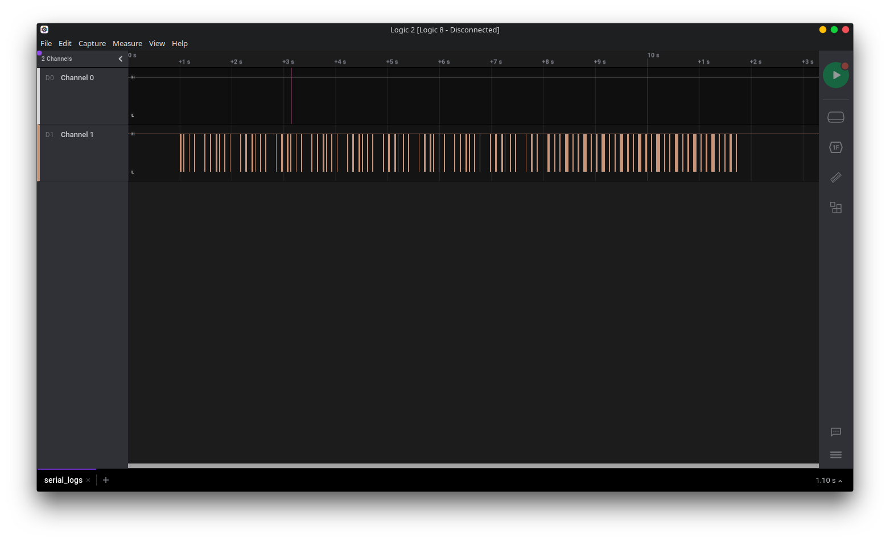
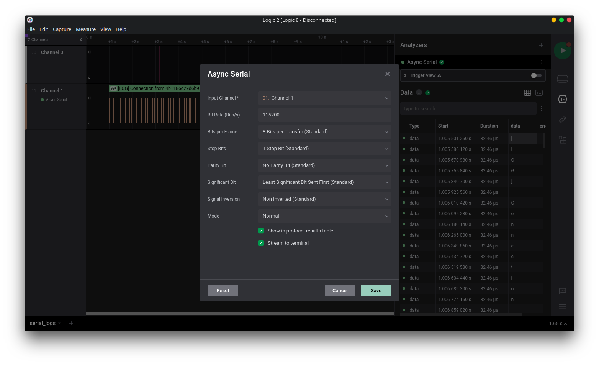
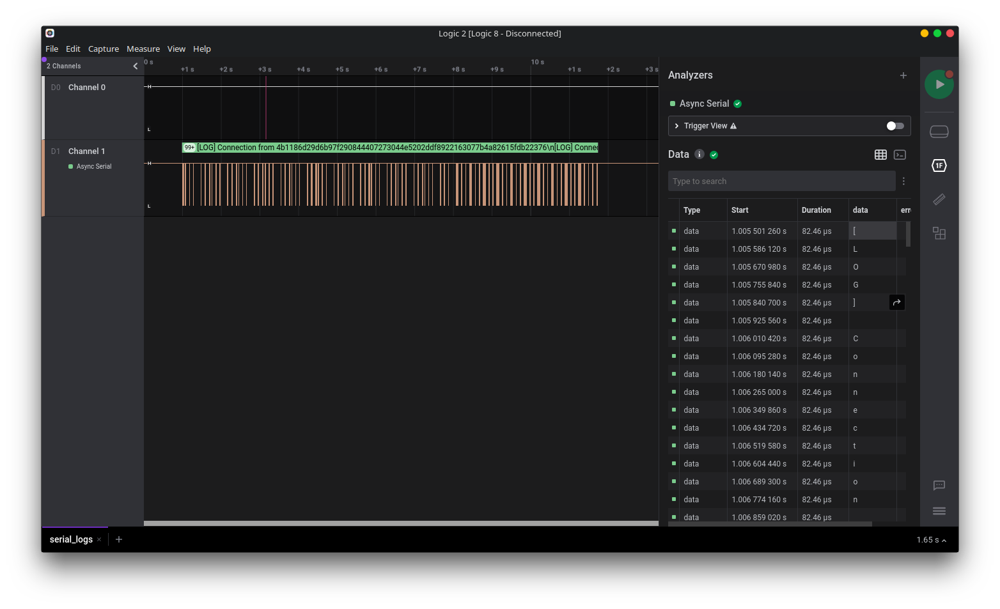
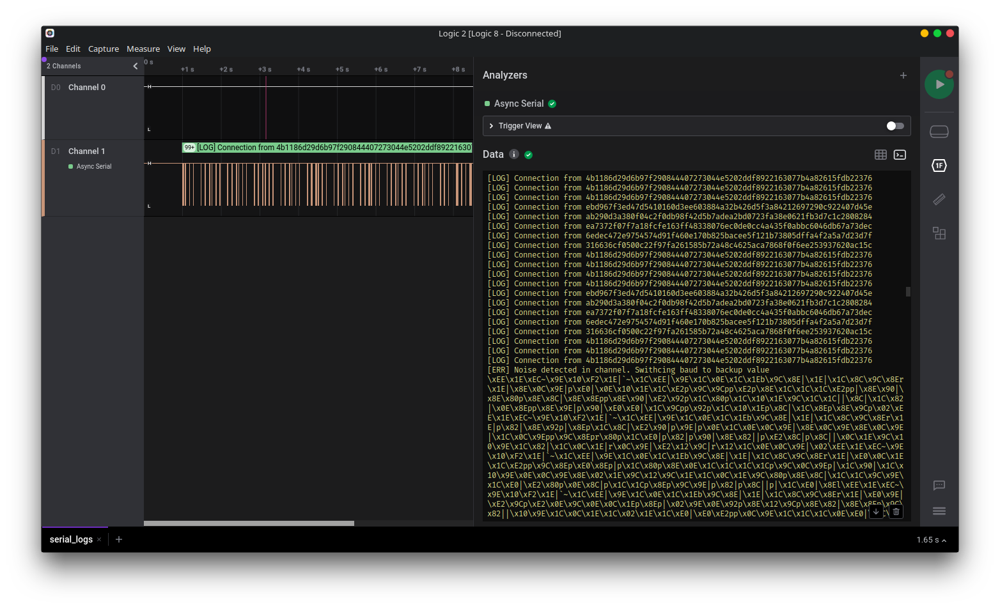
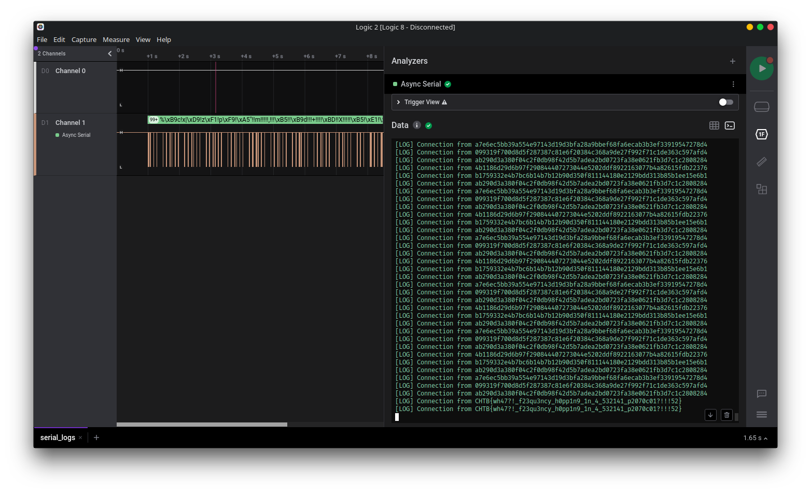

serial_logs
We've been given a file supposedly containing serial logs, a sal file.
Since there was a similar challenge in the previous CTF: block I guessed that I'd be able to open this in Saleae Logic (which has been updated to version 2 since the last writeup).
Opening up this file in Logic we see the captured communications in 'channel 1':

To decode this we can use the 'async serial' analyzer. The challenge description stated that this was a trace of a raspberry pi, which has a default baud rate of 115200. Trying that baud rate with the default async serial settings, we see some legible transmissions.
 |
 |
However it isn't going to be that easy, while some communications are visible, not all of the log is. Each block of decoded communications ends with a message saying the baud rate is changing.

After some fiddling around, it seems the other baud rate is 74400. When we decode the signal with this baud rate we see that the flag is printed at the end of the capture!
